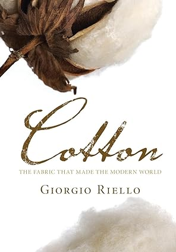

Cotton
Today's world textile and garment trade is valued at a staggering $425 billion. We are told that under the pressure of increasing globalisation, it is India and China that are the new world manufacturing powerhouses. However, this is not a new phenomenon: until the industrial revolution, Asia manufactured great quantities of colourful printed cottons that were sold to places as far afield as Japan, West Africa and Europe. Cotton explores this earlier globalised economy and its transformation after 1750 as cotton led the way in the industrialisation of Europe. By the early nineteenth century, India, China and the Ottoman Empire switched from world producers to buyers of European cotton textiles, a position that they retained for over two hundred years. This is a fascinating and insightful story which ranges from Asian and European technologies and African slavery to cotton plantations in the Americas and consumer desires across the globe.